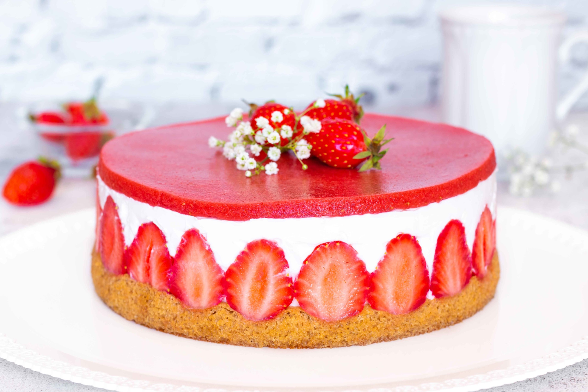

Le fraisier

Ingrédients (génoise)
- 1 gousse de vanille
- 120g de sucre
- 100g de farine
- 50g de beurre
- 4 oeufs
Ingrédients (sirop et garniture)
- 250 à 500g de fraises selon votre envie de fraises
- 150g de sucre
- 20cl d'eau
- Vanille
Ingrédients (la crème)
- 20cl de crème liquide entière
- 25cl de lait demi écrémé
- 2 jaunes d'oeuf
- 40g de maizéna
- 50g de sucre
- 1g d'agar agar
- 1 gousse de vanille
Etapes
- Réalisez le sirop en faisant chauffer l'eau, le sucre et la gousse de vanille fendue. Portez à ébullition 2/3 minutes et laissez infuser.
- Réalisez la crème en chauffant le lait avec la gousse de vanille fendue
- Fouettez les jaunes avec le sucre, ajoutez la maizéna
- Ajoutez l'agar agar dans le lait et laissez bouillir 1 minute
- Réalisez la génoise à présent : séparez les blancs des jaunes et battez les blancs bien fermes
- Versez la pâte dans deux cercles
- Enfournez à four chaud 10 minutes à 190°C
- Imbibez les génoises du sirop dès la sortie du four
- Plaquez bien les fraises contre le bord avec la crème, et complétez l'intérieur avec la crème et des morceaux de fraises
- Placez au frais entre 2 heures et une nuit avant de démouler et de servir